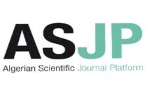
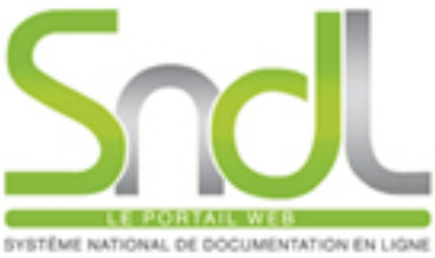

Ministère de l'Enseignement Supérieur et de la recherche scientifique
Ministry of Higher Education and Scientific Research
جامعة محمد الصديق بن يحيى - جيجل
Université Mohammed Seddik Ben Yahyia Jijel
Mohammed Seddik Ben Yahyia - Jijel University
كلية الحقوق والعلوم السياسية
Faculté de Droit et Sciences Politiques
Faculty of Law and Political Sciences
❓📚 إسأل المكتبي📚 Questionner le Bibliothécaire❓📚 Ask Librarian❓
مكتبة رقمية ذكية خاصة بكلية الحقوق والعلوم السياسية، توفر بيئة حديثة تُمكّن الطلبة والأساتذة والباحثين من الوصول السريع إلى المعلومات والخدمات الجامعية والموارد العلمية بكل سهولة وفعالية.Bibliothèque numérique intelligente dédiée à la Faculté de droit et des sciences politiques, offrant un environnement moderne permettant aux étudiants, aux enseignants et aux chercheurs d’accéder rapidement aux informations, aux services universitaires et aux ressources scientifiques avec facilité et efficacité.A smart digital library dedicated to the Faculty of Law and Political Science, providing a modern environment that enables students, professors, and researchers to quickly access information, university services, and scientific resources with ease and efficiency.
ديوان المطبوعات الجامعيةOffice des Publications UniversitairesUniversity Publications Office

منصة ASJPPlateforme ASJPASJP Platform
المجلات العلمية الجزائريةRevues scientifiques algériennesAlgerian Scientific Journals

منصة SNDLPlateforme SNDLSNDL Platform
النظام الوطني للتوثيق على الخط
Système National de Documentation en Ligne
National Online Documentation System
👥
مخابر البحث
Laboratoires de recherche
Research Laboratories
مخابر كلية الحقوق والعلوم السياسية
Laboratoires de la faculté
Faculty laboratories
🗣️
التظاهرات العلمية
Manifestations scientifiques
Scientific Events
المنظمة من طرف الكلية
Organisées par la Faculté
Organized by the Faculty
📰
مجلات الكلية
Revues de la faculté
Faculty Journals
المجلات العلمية المحكمة
Revues scientifiques
Scientific Journals
📑
منشورات أساتذة كلية الحقوق والعلوم السياسيةPublications des enseignants de la Faculté de Droit et Sciences PolitiquesPublications of Faculty Members of Law and Political Science
منشورات كلية الحقوق والعلوم السياسية (دار نشر)Publications de la Faculté de Droit et des Sciences Politiques (Maison d’édition)Publications of the Faculty of Law and Political Science (Publishing House)
ℹ️ بعض خدمات منصة ASJP قد تتطلب إنشاء حساب مجاني.
ℹ️ Certaines fonctionnalités nécessitent un compte gratuit.
ℹ️ Some ASJP services may require a free account.
مخبر التحولات القانونية والسياسية
Transformations Juridiques et Politiques
Legal & Political Transformations
TJP
⚖️ LEJA
LEJA
👨🏫 مدير المخبر: أ.د بوشكيوة عبد الحليم
👨🏫 Directeur : Pr. Bouchkioua Abdelhalim
👨🏫 Director: Prof. Bouchkioua Abdelhalim
📍 كلية الحقوق والعلوم السياسية جامعة جيجل - القطب تاسوست
📍 Faculté de Droit et des Sciences Politiques - Campus Tassoust
📍 Faculty of Law and Political Sciences - Tassoust Campus
📖 التعريف بالمخبر
📖 Présentation du laboratoire
📖 About the Laboratory
مخبر الدراسات القانونية المعمقة هو هيكل بحثي علمي تابع لكلية الحقوق والعلوم السياسية بجامعة جيجل، يهدف إلى تطوير البحث الأكاديمي في العلوم القانونية والسياسية والإدارية.
Le laboratoire LEJA développe la recherche académique dans les sciences juridiques, politiques et administratives.
LEJA promotes academic research in legal, political and administrative sciences.
🎯 النشاطات
🎯 Activités
🎯 Activities
✔️ نشر البحوث المحكمةPublication scientifiqueScientific publications
✔️ تنظيم ملتقيات وطنية ودوليةOrganisation de colloquesScientific conferences
📚 إصدارات المخبر
📚 Publications du laboratoire
📚 Laboratory Publications
يصدر المخبر مجلة "إسهامات قانونية" المحكمة .
Le laboratoire publie la revue scientifique "Contributions Juridiques".
The laboratory publishes the peer-reviewed journal "Legal Contributions".
👩🏫 مديرة المخبر: د. رويبح حياة
👩🏫 Directrice : Dr. Rouibah Hayette
👩🏫 Director: Dr. Rouibah Hayette
📍 كلية الحقوق والعلوم السياسية جامعة جيجل - القطب تاسوست
📍 Faculté de Droit et des Sciences Politiques - Campus Tassoust
📍 Faculty of Law and Political Sciences - Tassoust Campus
📖 التعريف بالمخبر
📖 Présentation du laboratoire
📖 About the Laboratory
يهتم مخبر البحث في الديناميكيات الافريقية بفهم وتحليل المسائل والاشكاليات التي تخص عموم القارة الافريقية، فهو مؤسسة علمية تكمن مهمتها في إنتاج تفكير علمي ومعارف بناءة تخدم القارة. يطمح المخبر للدخول في النقاشات العلمية الكبرى، برؤية إفريقية /جزائرية للمسائل القارية. يتعلق الأمر أيضا بمجموعة من مختصي علم السياسة (الافريقانيين) الذين يريدون التفكير والكتابة في المسائل الافريقية باستخدام مقاربات مختلفة وتشجيع تعدد الاختصاصات العلمية.
هذا المخبر يتماشى والرؤية الجزائرية الجديدة للسياسة الافريقية، والتي تشهد ديناميكية غير مسبوقة، مستفيدة بذلك من تاريخها النضالي وإرثها السياسيي والديبلوماسي في إفريقيا. فالجزائر تمثل نموذجا رائدا في حروب الاستقلال الوطنية، فقد كانت توصف ب"مكة الثوار". وعلى هذا الأساس يهدف المخبر لمرافقة هذه المقاربة لتعزيز الدور السلمي والرائد للجزائر في إفريقيا. وهو بذلك يمنح للحكومة الجزائرية خبرته لمعالجة الرهانات والتحديات التي تشهدها القارة، واقتراح الحلول الملائمة من أجل المساهمة في تطوير وتنمية إفريقيا، وصناعة القرار على مستوى السياسة الخارجية الجزائرية الافريقية.
DYNAF est un laboratoire de recherche d’analyse sur les questions et les problématiques qui concernent le continent africain dans son ensemble. Il se veut une entreprise scientifique qui a pour vocation la production scientifique et la construction de réflexions constructives. Il vise de s’inscrire dans les grands débats scientifiques, mais également porter un regard africain, voir algérien sur le continent. Il s’agit aussi d’un groupe de politistes qui comptent penser et écrire l’Afrique, et élargir le regard en diversifiant les approches et en encourageant la multidisciplinarité.
DYNAF va de pair avec la nouvelle vision algérienne de la politique africaine, qui œuvre dans un dynamisme dans le continent et entre également avec l’héritage politique et diplomatique de l’Algérie en Afrique. En sachant que l’Algérie incarne un modèle de lutte pour l’indépendance en Afrique au point où Alger était qualifiée à l’époque de « Mecque des révolutionnaires », c’est pour cette raison que ce labo souhaite accompagner cette approche, afin de consolider le rôle pacifique de l’Algérie.
Donc, ce laboratoire compte offrir à l’Algérie -au gouvernement- son expertise sur les enjeux et les défis du continent et proposer des recommandations. DYNAF tend à contribuer à la construction d’un continent fort par ses richesses à la fois naturelles et humaines, à travers la production d’idées et matériaux qui servirons à mieux comprendre le continent et agir pour son développement.
DYNAF (African Dynamics Laboratory) is a research center focused on the analysis of key issues affecting the African continent. As a scientific initiative, it aims to produce critical knowledge and contribute constructively to scholarly debates, offering an African—and particularly Algerian—perspective on continental matters. Composed of political science scholars, DYNAF promotes interdisciplinary approaches and encourages diverse methodologies in studying Africa.
The laboratory aligns with Algeria’s renewed African policy vision, rooted in its historical and diplomatic legacy as a leading voice in the continent’s liberation movements. DYNAF seeks to support this role by providing the Algerian government with expertise and strategic recommendations on Africa’s major challenges. Its mission is to contribute to building a resilient and prosperous continent through the production of ideas and knowledge that deepen understanding and foster sustainable development.
⚖️ مخبر التحولات القانونية والسياسية
⚖️ Transformations Juridiques et Politiques
⚖️ Legal & Political Transformations
TJP
👨🏫 مدير المخبر: د. عزوزي عبد المالك
👨🏫 Directeur : Dr. Azzouzi Abdelmalek
👨🏫 Director: Dr. Azzouzi Abdelmalek
📍 كلية الحقوق والعلوم السياسية جامعة جيجل - القطب تاسوست
📍 Faculté de Droit et des Sciences Politiques - Campus Tassoust
📍 Faculty of Law and Political Sciences - Tassoust Campus
📖 التعريف بالمخبر
📖 Présentation du laboratoire
📖 About the Laboratory
مخبر بحث علمي يهتم بدراسة التحولات القانونية والسياسية والقضايا الدستورية والإصلاحات التشريعية المعاصرة.
Laboratoire spécialisé dans les transformations juridiques et politiques contemporaines.
Research laboratory specialized in contemporary legal and political transformations.
📌 التعريف بالتظاهرات العلمية📌 Présentation des manifestations scientifiques📌 About Scientific Events
يتيح هذا الفضاء الوصول إلى الملتقيات العلمية والندوات والأيام الدراسية المنظمة من طرف كلية الحقوق والعلوم السياسية بجامعة محمد الصديق بن يحيى - جيجل، مع الاطلاع على المداخلات العلمية والبرامج والملفات الأكاديمية.
Cet espace permet d’accéder aux colloques, séminaires et journées d’étude organisés par la Faculté de Droit et des Sciences Politiques de l’Université Mohamed Seddik Ben Yahia - Jijel.
This section provides access to conferences, seminars and scientific events organized by the Faculty of Law and Political Science of Mohamed Seddik Ben Yahia University - Jijel.
📄 محتوى المنصة📚 Contenu de la plateforme📚 Platform Content
✔️ ملتقيات وطنية ودولية✔️ Colloques nationaux et internationaux✔️ National and International Conferences
مجلة إسهامات قانونية مجلة متخصصة في العلوم القانونية، تصدر عن مخبر "الدراسات القانونية المعمّقة"، كلية الحقوق والعلوم السياسية، جامعة محمد الصديق بن يحيى - جيجل (الجزائر).
تهتم بنشر الدراسات والبحوث الأكاديمية في الحقوق والعلوم السياسية والأبحاث والدراسات ذات الصلة بنشاطات مخبر "الدراسات القانونية المعمّقة"، من أجل خلق فضاء علمي أكاديمي يستقطب إسهامات مختلف الباحثين على اختلاف تخصصاتهم القانونية والسياسية والإدارية.
La revue "Contributions Juridiques" est une revue spécialisée en sciences juridiques éditée par le laboratoire des Études Juridiques Approfondies de la Faculté de Droit et des Sciences Politiques de l’Université Mohamed Seddik Benyahia - Jijel.
Elle publie des recherches académiques dans les domaines du droit, des sciences politiques et des études liées aux activités du laboratoire afin de créer un espace scientifique ouvert aux chercheurs.
"Legal Contributions" is a specialized journal in legal sciences published by the Advanced Legal Studies Laboratory, Faculty of Law and Political Sciences, University of Mohamed Seddik Benyahia - Jijel.
It publishes academic studies and research in law, political sciences and related fields to support scientific and academic contributions from researchers.
🏛️ مجلة أبحاث قانونية وسياسية
🏛️ Recherches Juridiques et Politiques
🏛️ Legal and Political Research Journal
مجلة أبحاث قانونية وسياسية هي مجلة أكاديمية دولية محكمة نصف سنوية، تصدر عن كلية الحقوق والعلوم السياسية بجامعة محمد الصديق بن يحيى – جيجل (الجزائر)، وقد صدر عددها الأول في جوان 2016.
تهدف المجلة إلى المساهمة في تطوير ونشر المعرفة العلمية في مجالات العلوم القانونية والإدارية والسياسية، وتوفر فضاءً أكاديميًا للباحثين المتخصصين لنشر بحوثهم ودراساتهم الأصيلة والمعاصرة.
تنشر المجلة الأبحاث باللغات العربية والفرنسية والإنجليزية عبر منصة المجلات العلمية الجزائرية ASJP، كما تصدر بصيغتين إلكترونية وورقية، مع إتاحة القراءة والتحميل مجانًا.
La revue Recherches Juridiques et Politiques est une revue académique internationale, semestrielle et évaluée par les pairs, publiée par la Faculté de Droit et des Sciences Politiques de l’Université Mohamed Seddik Ben Yahia - Jijel.
Elle vise à promouvoir la recherche scientifique dans les domaines du droit, des sciences administratives et politiques, et offre un espace académique destiné aux chercheurs spécialisés.
Les articles sont publiés en arabe, français et anglais via la plateforme ASJP, avec une version électronique et papier disponible gratuitement.
Legal and Political Research Journal is an international, refereed and semi-annual academic journal published by the Faculty of Law and Political Science at Mohamed Seddik Ben Yahia University - Jijel, Algeria.
The first issue was published in June 2016. The journal aims to contribute to the development and dissemination of scientific knowledge in legal, administrative and political sciences.
It provides researchers with an academic space to publish original and contemporary studies in Arabic, French and English through the Algerian Scientific Journals Platform (ASJP). The journal is available in both electronic and printed versions with free access for reading and downloading.
📚 منشورات كلية الحقوق والعلوم السياسية📚 Publications de la Faculté de Droit et Sciences Politiques📚 Faculty of Law and Political Science Publications
📜 ضوابط النشر📜 Règlement📜 Rules
سيتم نشر ضوابط النشر لاحقًا بعد اعتمادها من طرف العميد.Les règles seront publiées après validation du doyen.Rules will be published after dean approval.
📄 نموذج بيانات النشر📄 Formulaire de publication📄 Publication Form
يمكنك تحميل النموذج:Télécharger le formulaire :Download the form:
👩💼 مسؤولة المكتبةResponsable de la bibliothèqueLibrary Manager
العجرود زهرة
الرتبة:Grade:Rank:
ملحق بالمكتبات الجامعية من المستوى الثاني
📧 fdsp_rbib@univ-jijel.dz
📞 034547072
📚 تقديم المكتبةPrésentation de la bibliothèqueLibrary Presentation
فضاء علمي ثقافي تربوي اجتماعي تمنح للطالب والأستاذ على حد سواء المعرفة المرجوة من خلال المصادر التي توفرها والتي ترتبط بالمناهج الدراسية والبرامج الأكاديمية والبحوث العلمية في مجال تخصصهم.
Espace scientifique, culturel, éducatif et social offrant des ressources académiques aux étudiants et enseignants.
A scientific, cultural, educational and social space providing knowledge resources for students and teachers.
📍 موقع المكتبةLocalisation de la bibliothèqueLibrary Location
تقع المكتبة في مبنى كلية الحقوق والعلوم السياسية في الطابقين الأول والثاني، لها ثلاثة مداخل هي:
La bibliothèque est située dans le bâtiment de la faculté aux premier et deuxième étages.
The library is located in the faculty building on the first and second floors.
المدخل الخلفي الرابط بين الطابق الأول والثانيEntrée arrière reliant les étagesBack entrance connecting floors
المدخل المؤدي إلى الجناح البيداغوجيEntrée vers le bloc pédagogiqueEntrance to pedagogical wing
المدخل المؤدي إلى المصالح الإدارية للكليةEntrance to administrative servicesEntrance to administrative services
🏛️ المصالحLes servicesDepartments
مصلحة تسيير الرصيد الوثائقيService de gestion documentaireDocument Management Service
المعالجة الفنية للكتب والرسائل الجامعية والدورياتTraitement des documentsDocument processing
عمليات الاقتناءAcquisitionAcquisition
التسجيل والجردRegistration and inventoryRegistration and inventory
الفهرسة والتصنيفCatalogage et classificationCataloging and classification
متابعة قواعد البياناتDatabase managementDatabase management
مصلحة التوجيه والبحث البيبليوغرافيService d’orientation et recherche bibliographiqueBibliographic Guidance Service
بنك الإعارة وقاعات المطالعةService de prêt et lectureLoan and reading services
إصدار وتجديد بطاقات الانخراط وشهادة التبرئةMembership cardsMembership cards
مساعدة المستفيدين في البحوث البيبليوغرافيةResearch assistanceResearch assistance
السهر على شروط الإعارةLoan managementLoan management
🏢 الإدارةAdministrationAdministration
📦 المخزنMagasinStorage
💳 بنك الإعارةService de prêtLoan Service
📰 قاعة الدورياتSalle des périodiquesJournals Room
👨🏫 قاعة الأساتذةSalle des enseignantsTeachers Room
📖 قاعة المطالعةSalle de lectureReading Room
📦
المخزنMagasinStorage
يضم الكتب باللغتين العربية والفرنسية لقسمي الحقوق والعلوم السياسية، تمت معالجتها بطريقة علمية يقوم عليها طاقم أخصائي في المكتبات يتولى معالجة الكتاب في جميع المراحل التي يمر بها ابتداءً من الاختيار والتزويد إلى غاية وضعه بين يدي المستفيد.
Le magasin regroupe des livres en arabe et en français pour les départements de droit et des sciences politiques. Ils sont traités scientifiquement par un personnel spécialisé en bibliothéconomie, depuis la sélection et l'acquisition jusqu'à leur mise à disposition des usagers.
The storage contains books in Arabic and French for the departments of law and political science. They are processed scientifically by specialized library staff, from selection and acquisition to being made available to users.
📚 تنمية المجموعات📚 Développement des collections📚 Collection Development
الشراء
الهدايا
الهبات
الإيداع
Achat
Dons
Subventions
Dépôt légal
Purchase
Gifts
Donations
Legal deposit
📌 تنظيم الكتب📌 Organisation des documents📌 Organization of materials
تسجيلها وجردها
فهرستها
تصنيفها
ترتيبها على الرفوف لتسهيل استرجاعها
Enregistrement et inventaire
Catalogage
Classification
Classement sur les rayons pour faciliter l’accès
Registration and inventory
Cataloging
Classification
Shelving for easy retrieval
📖 تصنيف ديوي العشري📖 Classification Décimale de Dewey📖 Dewey Decimal Classification
تعتمد المكتبة على تصنيف ديوي العشري وهو نظام وضعه ملفيل ديوي، حيث يتم تقسيم المعرفة إلى عشرة أقسام رئيسية، وكل قسم إلى فروع أصغر، مما يسهل تحديد موقع الكتاب واسترجاعه بسهولة.
La bibliothèque utilise la classification décimale de Dewey, développée par Melvil Dewey. Ce système divise la connaissance en dix grandes classes, chacune subdivisée en sous-classes, facilitant la localisation des documents.
The library uses the Dewey Decimal Classification system developed by Melvil Dewey. It divides knowledge into ten main classes, each subdivided into smaller sections, making it easier to locate and retrieve books.
💳 بنك الإعارة💳 Service de prêt💳 Loan Service
هو الواجهة الرئيسية للمكتبة باعتباره فضاء مخصص لتلبية احتياجات المستفيدين.
C'est l'interface principale de la bibliothèque dédiée aux besoins des usagers.
It is the main interface of the library dedicated to users' needs.
📚 الخدمات📚 Services📚 Services
الإعارة الخارجية: إعارة الكتب لمدة زمنية محددة.Prêt externe : Emprunt pour une durée limitée.External loan: Borrow books for a limited time.
الإعارة الداخلية: الاطلاع داخل القاعة.Consultation sur place : Lecture sur place.Internal use: Reading inside the room.
📌 نظام الإعارة📌 Système de prêt📌 Loan system
🎓 الطلبة: 4 كتب لمدة أسبوع قابلة للتجديد🎓 Étudiants : 4 livres pour une semaine renouvelable🎓 Students: 4 books for one week (renewable)
👨🏫 الأساتذة: 15 يوم، حتى 5 كتب👨🏫 Enseignants : 15 jours, jusqu'à 5 livres👨🏫 Teachers: 15 days, up to 5 books
⚠️ شروط مهمة⚠️ Conditions importantes⚠️ Important rules
إظهار بطاقة الطالب أو القارئPrésenter la carte d'étudiant ou de lecteurShow student or reader card
احترام مدة الإعارةRespecter la durée de prêtRespect loan duration
عدم إتلاف الكتبNe pas endommager les livresDo not damage books
التأخر يؤدي إلى عقوباتLe retard entraîne des sanctionsLate return leads to penalties
📚
قاعة الدورياتSalle des périodiquesJournals Room
هي فضاء مخصص للبحث المفتوح في حدود الخدمة الداخلية تتوفر على مصادر معلومات كالمعاجم والقواميس، الموسوعات، المجلات، والمذكرات والرسائل الجامعية يكون فيها الطالب على اتصال مباشر مع هذه المصادر في البحث عن المعلومات التي تخدمه كما أن للطالب الحق في التصوير والإستنساخ.
ويتعين على روادها احترام النظام المعمول به في هذه القاعة سواء تعلق الأمر بـ:
- إظهار بطاقة الطالب أو القارئ.
- وضع الحقائب على الرفوف المخصصة لها.
- يحضــــر استخــــدام الهاتـــف.
- يستوجب على كل مستفيد الرجوع إلى مسؤول القاعة في حالة أي استفسار.
- إلتزام الهدوء.
- تمنع التجمعات والأعمال المشتركة.
- عدم إدخال المأكولات والمشروبات.
- التجــــــول داخل القاعــــــة ممنوع.
كما يمكن الولوج إلى **المستودع الرقمي لجامعة** جيجل **Dspace** على الخط المباشر:
http://dspace.univ-jijel.dz
وهو عبارة على فضاء رقمي يخص الذاكرة العلمية للجامعة يقوم بإتاحة الرسائل الجامعية التي تم إيداعها على مستوى مكتبة الكلية كما يمكن تحميلها على شكل **PDF** مباشرة على الحاسوب أو الهاتف المحمول.
C’est un espace dédié à la recherche en accès libre dans le cadre de la consultation interne. Il offre des sources d’information telles que des dictionnaires, encyclopédies, revues, mémoires et thèses universitaires. L’étudiant est en contact direct avec ces منابع pour rechercher l’information, avec la possibilité de photocopie et de reproduction.
Les usagers doivent respecter le règlement intérieur de la salle, notamment :
- Présenter la carte d’étudiant ou de lecteur.
- Déposer les sacs dans les espaces prévus.
- L’utilisation du téléphone est interdite.
- S’adresser au responsable en cas de besoin.
- Respecter le silence.
- Les regroupements et travaux collectifs sont interdits.
- Interdiction de nourriture et boissons.
- Interdiction de circuler dans la salle.
Il est également possible d’accéder au dépôt institutionnel de l’université de Jijel **Dspace** via :
http://dspace.univ-jijel.dz
C’est une plateforme numérique contenant la mémoire scientifique de l’université, permettant l’accès et le téléchargement des mémoires en format **PDF**.
This is a space dedicated to open-access research within the limits of in-library use. It provides information sources such as dictionaries, encyclopedias, journals, theses, and academic dissertations. Students have direct access to these materials and are allowed to copy and reproduce them.
Users must respect the internal rules of the room, including:
- Presenting a student or reader card.
- Placing bags in designated areas.
- Mobile phone use is prohibited.
- Contacting the room supervisor when needed.
- Maintaining silence.
- Group gatherings and collaborative work are not allowed.
- No food or drinks allowed.
- Movement inside the room is restricted.
Users can also access the university’s digital repository **Dspace** via:
http://dspace.univ-jijel.dz
This platform provides access to the university’s scientific archive and allows downloading academic works in **PDF** format.
👨🏫
قاعة الأساتذةSalle des enseignantsTeachers Room
هي الفضاء المخصص للأساتذة وطلبة الدكتوراه تمكنهم من المطالعة وإعداد أعمالهم العلمية والأكاديمية في جو من الهدوء تتوفر على مجموعة من الكتب باللغتين العربية والفرنسية فيما يخدم المنهاج الدراسي في مجال تخصصهم ويتم فيها مراعات النظام الداخلي الذي ينص على الاحترام التام لمستعملي القاعة وكذا القائمين عليها.
C’est un espace réservé aux enseignants et aux étudiants en doctorat leur permettant de lire et de préparer leurs travaux scientifiques et académiques dans un environnement calme. Elle dispose d’une collection de livres en arabe et en français répondant au programme pédagogique de leur spécialité. Le règlement intérieur exige le respect total des usagers de la salle ainsi que du personnel responsable.
It is a space dedicated to teachers and PhD students, allowing them to read and prepare their scientific and academic work in a quiet environment. It contains a collection of books in Arabic and French related to their academic curriculum. The internal regulations require full respect for both users of the room and its staff.
📖
قاعة المطالعةSalle de lectureReading Room
هي فضاء مشترك خاص بالطلبة مخصص للمطالعة وإنجاز البحوث والأعمال المشتركة مرتبطة بنظام داخلي يحدد شروط المطالعة لضمان راحة المستفيدين والتي من بينها:
- تفادي قدر الإمكان المناقشات التي تؤدي إلى إحداث الفوضى والضجيج.
- تجنب وضع المعاطف والمضلات وما شابه ذلك فوق الطاولات.
- عدم إحضار المأكولات والمشروبات.
- عــدم التدخيــــن.
- يمنع استخدام الهاتف فور دخول القاعة أو أي جهاز آخر من شأنه التشويش على الغير.
C’est un espace commun réservé aux étudiants, destiné à la lecture, à la recherche et aux travaux de groupe. Il est soumis à un règlement intérieur définissant les conditions de consultation afin de garantir le confort des usagers, notamment :
- Éviter autant que possible les discussions bruyantes.
- Ne pas déposer manteaux, parapluies ou objets similaires sur les tables.
- Interdiction d’introduire nourriture et boissons.
- Interdiction de fumer.
- L’usage du téléphone ou de tout appareil perturbateur est interdit dès l’entrée de la salle.
It is a shared space for students dedicated to reading, research, and group work. It follows internal regulations designed to ensure user comfort, including:
- Avoiding unnecessary discussions that may cause noise.
- Not placing coats, umbrellas, or similar items on tables.
- No food or drinks allowed.
- Smoking is prohibited.
- Mobile phones and any disturbing devices are not allowed inside the room.
📘 النظام الداخلي لمكتبة كلية الحقوق والعلوم السياسية
📘 Règlement intérieur de la bibliothèque de la Faculté de Droit et des Sciences Politiques
📘 Internal Regulations of the Faculty of Law and Political Sciences Library
تحميل وقراءة النظام الداخلي الخاص بمكتبة كلية الحقوق والعلوم السياسية.
Télécharger et consulter le règlement intérieur de la bibliothèque de la Faculté de Droit et des Sciences Politiques.
Download and read the internal regulations of the Faculty of Law and Political Sciences Library.
مكتبة "اقرأ" لديوان المطبوعات الجامعية تواجه مشكلة تقنية مؤقتة، وسيتم استئناف الخدمة قريبًا.
La bibliothèque "Iqraa" de l’Office des publications universitaires rencontre un problème technique temporaire.
The "Iqraa" Library of the University Publications Office is experiencing a temporary technical issue.
رمز الاستجابة السريعة لفهرس المكتبة
(موقع وتطبيق FLPS Library Catalog)
QR du catalogue de la bibliothèque
(site et application FLPS Library)
Library Catalog QR Code
(Website & App)
📖
التعريف بمنصة إقرأPrésentation de la plateforme IQRAAAbout IQRAA Platform
منصة "إقرأ" هي مكتبة رقمية وطنية تابعة لديوان المطبوعات الجامعية،
تهدف إلى توفير محتوى علمي وأكاديمي رقمي لفائدة الطلبة والأساتذة
والباحثين في مختلف التخصصات.
IQRAA est une bibliothèque numérique nationale de l’OPU offrant des ressources académiques.
IQRAA is a national digital academic library provided by OPU.
تتيح المنصة الوصول إلى آلاف الكتب الجامعية في مجالات متعددة مثل
الحقوق، العلوم السياسية، الاقتصاد، العلوم الاجتماعية وغيرها،
مما يساعد في دعم التعليم العالي والبحث العلمي.
⭐ مميزات المنصة⭐ Avantages⭐ Features
📚 مكتبة رقمية ضخمة
🌐 وصول في أي وقت ومن أي مكان
🔍 بحث سريع ومتقدم
🎓 دعم البحث العلمي
📖 قراءة الكتب مباشرة
🧾
كيفية التسجيلComment s’inscrireHow to register
الدخول إلى المنصة عبر الرابط
الضغط على "إنشاء حساب"
إدخال المعلومات الشخصية
استعمال البريد الجامعي فقط
تأكيد البريد الإلكتروني
إرسال طلب تفعيل إلى: bib.inf@univ-jijel.dz
انتظار تفعيل الحساب
⚠️
يجب استخدام البريد الجامعي الرسمي فقطEmail universitaire obligatoireUniversity email required


{kind=link}
{kind=link}